| 海德汉iTNC530 G代码 |
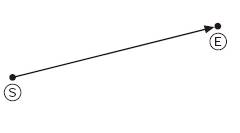 编程可以直接输入： ●直线中终点E的坐标 ●如果需要，需要加上半径补偿、进给率、辅助功能指令 刀具移动轨迹从当前S的位置到终点E的位置 编程格式： 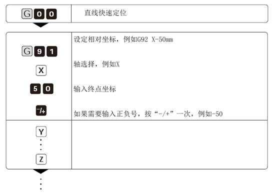 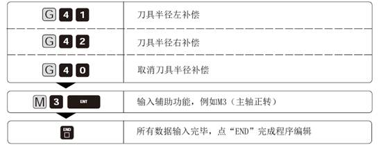 程序段输出结果显示：N25 G00 G42 G91 X+50 G90 Y+10 Z-20 M3* 程序举例： 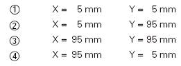 下刀深度 Z=110mm 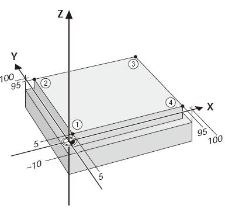 %S5121 G71* N10 G30 G17 X+0 Y+0 Z-20* N20 G31 G90 X+100 Y+100 Z+0* N30 G99 T1 L+0 R+5* N40 T1 G17 S2500* N50 G00 G40 G90 Z+100 M06* N60 X-10 Y-10* N70 Z-10 M03* N80 G01 G41 X+5 Y+5 F150* N90 Y+95* N100 X+95* N110 X+5* N120 X+5* N130 G00 G40 X-10 Y-10 M05* N140 Z+100 M02* N99999 %S5121 G71*
圆心坐标定义 前提条件 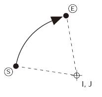 定义旋转方向 ●顺时针旋转：G02 ●逆时针旋转：G03 输入数据 对于整圆，在G02/G03程序段中的轮廓终点坐标要和起点坐标一样。 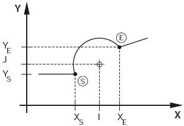 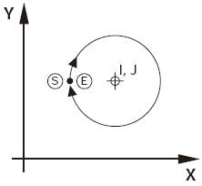 （圆弧段编程） （整圆编程） 编程格式： 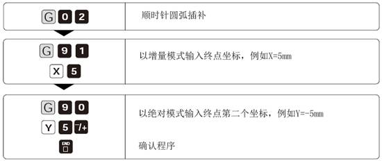 程序段输出结果显示：N25 G02 G91 X+50 G91 X+5 G90 Y-5* 编程举例： 圆心 I=50mm J=50mm 圆弧的起点和终点 X=50mm Y=50mm 铣削深度 Z=-5mm 刀具半径R =15mm 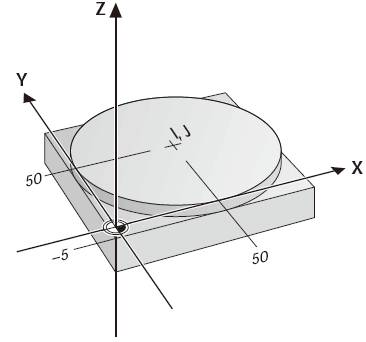 %S5201 G71* N10 G30 G17 X+1 Y+1 Z-20* N20 G31 G90 X+100 Y+100 Z+0* N30 G99 T6 L+0 R+15* N40 T6 G17 S1500* N50 G00 G40 G90 Z+100 M06* N60 X+50 Y-40* N70 Z-5 M03* N80 I+50 J+50* N90 G01 G41 X+50 Y+0 F100* N100 G26 R10* N110 G02 X50 Y+0* N120 G27 R10* N130 G00 G40 X+50 Y-40* N140 Z+100 M02* N99999 %S5201 G71* 圆弧半径定义 定义旋转方向 输入数据 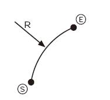 （S点到E点的编程输入圆弧半径值） 注意： ●对于整圆，两个G02/G03程序段必须连续编程 ●圆弧起点到终点的距离不能大于圆的直径 ●最大可设定的半径值为100m 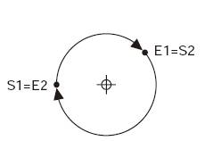 （含有两个G02的程序段） 中心角CCA和圆弧半径R 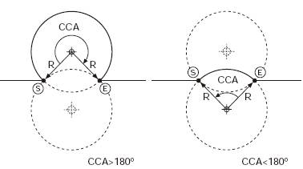 轮廓曲率和旋转方向 旋转方向决定圆弧类型 ●凸圆（向外弯曲） 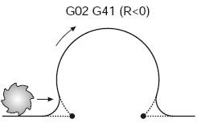 ●凹圆（向内弯曲） 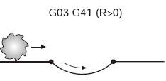 编程格式： 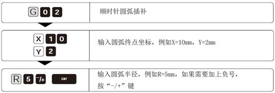 程序段输出结果显示：N25 G02 X+10 Y2 R-5* 如有需要可以加上 ●刀具半径补偿G42 ●进给倍率F ●辅助功能M指令 编程举例： 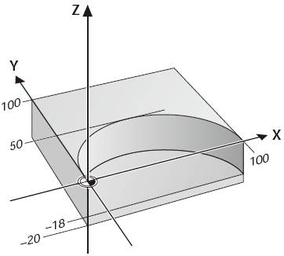 %S5231 G71*
应用 激活 输入数据
●角度H值允许输入的范围为：-360°~+360° 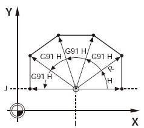 编程格式： 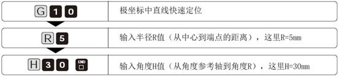 程序段输出结果显示：N25 G10 R+5 H30* 编程举例： 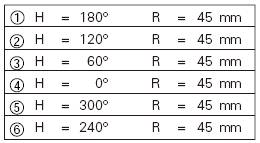 刀具半径 R=5mm 下刀深度 Z=-10mm
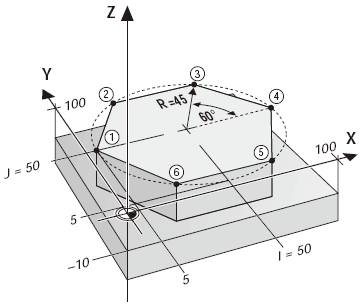 %S5301 G71* N10 G30 G17 X+0 Y+0 Z-20* N20 G31 G90 X+100 Y+100 Z+0* N30 G99 T1 L+0 R+17* N40 T1 G17 S3200* N50 G00 G40 G90 Z+100 M06* N60 I+50 J+50* N70 G10 R+70 H-190* N80 Z-10 M03* N90 G11 G41 R+45 H+180 F100* N100 H+120* N110 H+60* N120 G91 H-60* N130 G90 H-60* N140 H+240* N150 H+180* N160 G10 G40 R+70 H+170* N170 Z+100 M02* N99999 %S5301 G71*
极坐标半径也是圆弧半径，被定义成起点S到中心极点的距离。 输入 定义旋转方向 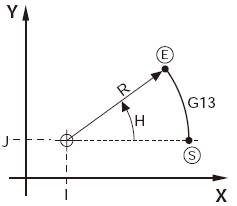 编程格式： 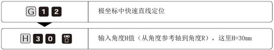 程序段输出结果显示：N25 G12 H30* 如有需要可以加上 ●刀具半径补偿G42 ●进给倍率F ●辅助功能M指令 编程举例： 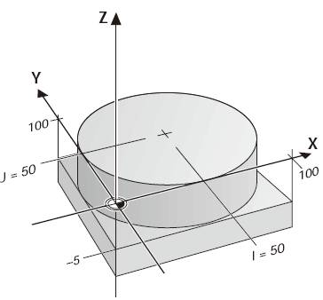 %S5321 G71* N10 G30 G17 X+0 Y+0 Z-20* N20 G31 G90 X+100 Y+100 Z+0* N30 G99 T25 L+0 R+15* N40 T25 G17 S1500* N50 G00 G40 G90 Z+100 M06* N60 I+50 J+50* N70 G10 R+70 H+280* N80 Z-5 M03* N90 G11 G41 R+50 H-90 F100* N100 G26 R10* N110 G12 H+270* N120 G27 R10* N130 G10 G40 R+70 H-110* N140 Z+100 M02* N99999 %S5321 G71*
倒棱指令含义为在两条直线的交点处以每条边相同的长度切除拐角。 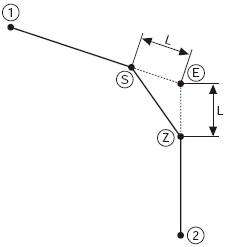 先决条件 ●倒棱程序段的半径补偿前后必须一致 ●内倒角必须足够的大以至于能容纳当前的刀具 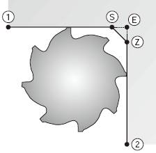 注意 ●在轮廓的起始位置不能使用G24 ●倒棱仅仅在工作平面内有效 ●倒棱的进给率和当前的程序段进给率保持一致 ●被倒棱切除的拐角E点并不是编程轮廓的一部分 编程格式： 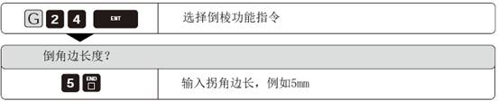 程序段输出结果显示：N25 G24 R5* 编程举例： 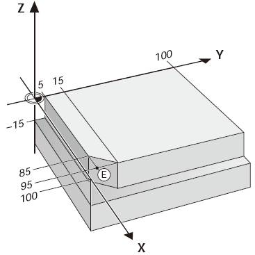 程序 %S5141 G71* N10 G30 G17 X+0 Y+0 Z-20* N20 G31 G90 X+100 Y+100 Z+0* N30 G99 T5 L+5 R+10* N40 T5 G17 S2000* N50 G00 G40 G90 Z+100 M06* N60 x-10 Y-5* N70 Z-15 M03* N80 G01 G42 X+5 Y+5 F200* N90 X+95* N100 G24 R10* N110 Y+100* N120 G00 G40 X+110 Y+110* N130 Z+100 M02* N99999 %S5141 G71*
刀具在前后两个轮廓切向连接的圆弧上移动，G25被用于倒圆角。 输入数据 先决条件 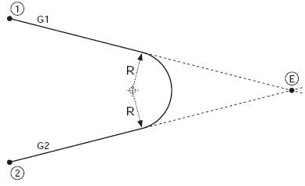 注意 ●在前后两个定位程序段中，两者坐标必须在圆弧平面内 ●G25程序段的进给率编程只在当前程序段有效，在G25程序段后，之前的进给率继续有效 ●被倒圆角切除的拐角E点不在编程轮廓上 编程格式： 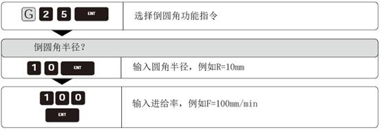 程序段输出结果显示：G25 R10 F100 * 编程举例： 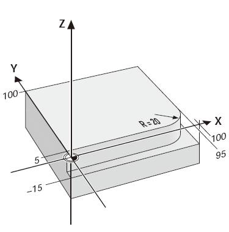 %S5271 G71* N10 G30 G17 X+0 Y+0 Z-20* N20 G31 G90 X+100 Y+100 Z+0* N30 G99 T7 L+0 R+10* N40 T7 G17 S1500* N50 G00 G40 G90 Z+100 M06* N60 x-10 Y-5* N70 Z-15 M03* N80 G01 G42 X+0 Y+5 F100* N90 X+95* N100 G25 R20* N110 Y+100* N120 G00 G40 X+120 Y+120* N130 Z+100 M02* N99999 %S5271 G71*
G30-定义毛坯最小尺寸 G39-程序调用 应用和激活 输入数据 例子：程序调用
刀具移动带半径补偿 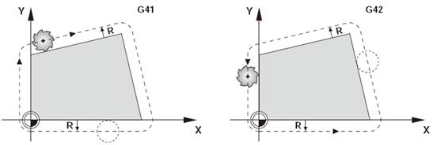
刀具长度补偿指令格式如下：
加工过程 精加工过程： 所需刀具 输入数据 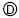 ：键槽长度，定义符号决定第一次铣削方向●第二边长度 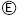 ：键槽宽度●进给率：在加工平面上刀具的运行速度 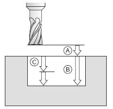 起始点 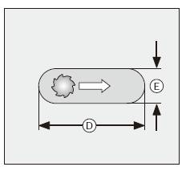 程序举例： 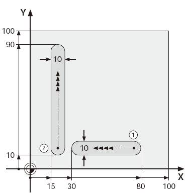 %S8101 G71* N10 G30 G17 X+0 Y+0 Z-20* N20 G31 G90 X+100 Y+100 Z+0* N30 G99 T1 L+0 R+4* N40 T1 G17 S2000* N50 G74 P01 -2 P02 -15 P03 -5 P04 80 P05 X-50* P06 Y+10 P07 120* N60 G00 G40 G90 Z+ 100 M06* N70 X+76 Y+15 M03* N80 Z+2 M99* N90 G74 P01 -2 P02 -15 P03 -5 P04 80 P05 Y+80* N100 X+20 Y+14 M99* N110 Z+100 M02* N99999 %S8101 G71*
加工过程 铣刀开始正在长轴的正方向铣削，总是在方形槽的Y正方向开始直到循环结束，最后刀具返回到起始点位置。 所需刀具/局限性 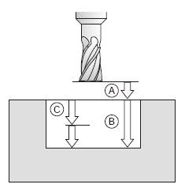 定义粗加工旋转方向 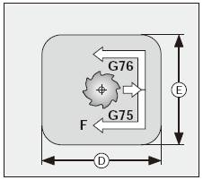 输入数据 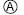 ●铣削深度 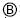 代数符号决定加工方向（负值表示相反的工作方向）●单次下刀深度 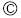 ●单次下刀的进给率：在下刀期间走刀的速度 ●第一边长度 ●第二边长度 ●进给率：在加工平面上刀具的运行速度 计算 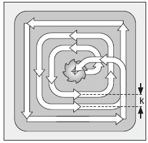 拐角半径 拐角半径由铣刀半径决定。 起始点 程序举例： 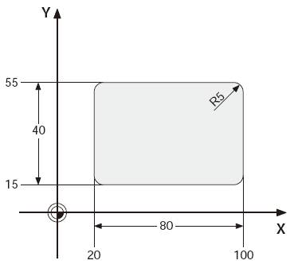 程序 %S8121 G71* N10 G30 G17 X+0 Y+0 Z-20* N20 G31 G90 X+110 Y+100 Z+0* N30 G99 T1 L+0 R+5* N40 T1 G17 S2000* N50 G76 P01 -2 P02 -10 P03 -4 P04 80 P05 X+80* P06 Y+40 P07 100* N60 G00 G40 G90 Z+ 100 M06* N70 X+60 Y+35 M03* N80 Z+2 M99* N90 Z+100 M02* N99999 %S8121 G71*
加工过程 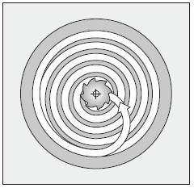 所需刀具 此循环需要中心切和铣削，或者在凹槽中心进行定心钻。 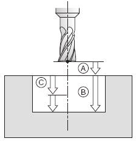 输入数据 ●安全高度 ●铣削深度 ●单次下刀深度 单次下刀的进给率：在下刀期间走刀的速度 ●圆半径 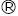 ：圆槽的半径●进给率：在加工平面上刀具的运行速度 定义粗加工旋转方向 起始点 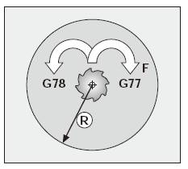 编程举例： 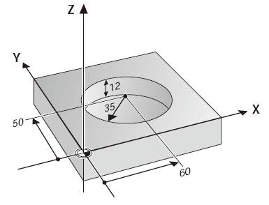 %S8141 G71* N10 G30 G17 X+0 Y+0 Z-20* N20 G31 G90 X+100 Y+100 Z+0* N30 G99 T1 L+0 R+4* N40 T1 G17 S2000* N50 G77 P01 -2 P02 -12 P03 -6 P04 80 P05 35* P06 100* N60 G00 G40 G90 Z+ 100 M06* N70 X+60 Y+50 M03* N80 Z+2 M99* N90 Z+100 M02* N99999 %S8141 G71*
加工过程 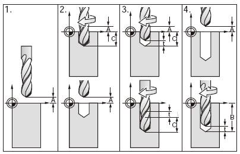 输入数据 ●安全高度 ●总的孔深 ●单次下刀深度 ●停留时间：以秒S为单位，为了断屑在总孔深处底部保持一段时间 ●进给率：在钻孔期间的运行速度 计算
加工过程 所需刀具 输入数据 计算 注意： 编程举例：
程序
机床控制系统为了达到刚性攻丝的效果需要依靠机床手册来操作特定准备 注意： 输入数据
加工过程 输入数据 注意： 编程举例：
|